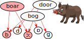
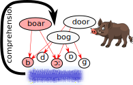
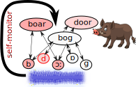
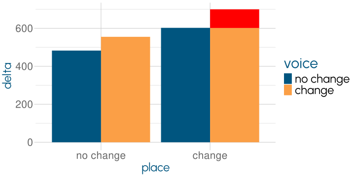

Speech Errors
Human Speech
Martin Corley
Psychology, PPLS
University of Edinburgh
2025-01-21
Malapropisms
the pineapple of politeness
she’s as headstrong as an allegory on the banks of the Nile
Sheridan, The Rivals, 1775
Malapropisms
the pinnacle of politeness
she’s as headstrong as an alligator on the banks of the Nile
Sheridan, The Rivals, 1775
Word-y Errors
| Type | Utterance | Target |
|---|---|---|
| word exchange | Guess whose mind came to name? | name came to mind |
| morpheme exchange | I randomed some samply | sampled some randomly |
| word substitution | Get me a fork | spoon |
| phrase blend | Miss you a very much | very much + a great deal |
| word blend | The chung of today | children + young |
Harley (2014)
What do Word Errors Tell Us?
a weekend for maniacs—a maniac for weekends
- content words are exchanged
- stress is left unchanged
- plural -s is stranded
- plural -z becomes -s
What do Word Errors Tell Us?

errors constrain shape of speech production system
leads to a series of models
(e.g., Garrett, 1980)
CW
Jeremy Hunt, the Culture Secretary
BBC Radio 4, 6 December 2010
Spoonerisms
You have hissed my mystery lectures; you have tasted a whole worm; you must leave at once by the town drain
Sound-y Errors
| Type | Utterance | Target |
|---|---|---|
| phoneme anticipation | The mirst of May | first |
| phoneme perseveration | God rest re merry gentlemen | ye |
| phoneme exchange | Do you reel feally bad? | feel really |
| affix deletion | The chimney catch fire | catches |
| phoneme deletion | Backgound lighting | background |
Harley (2014)
Lexical Bias
phoneme substitutions result in real words more often than chance would predict
- feedback model
Lexical Bias
phoneme substitutions result in real words more often than chance would predict

Feedforward Model
words are misselected, or motor noise causes errors
if it’s recognised as a word it’s more likely to “pass”
Feedforward Problem
youtu.be/yAbWQFM4G24; Hartsuiker et al. (2005)
Two Issues
what is the nature of the self-monitor?
what happens to partially-activated phonemes?
Self-Monitor
- self-monitor is the comprehension system
- self-monitor is production-based
(e.g., van Wijk & Kempen, 1987)
Arguments Against Comprehension
mostly from neuropsychological dissociations
many patients with good comprehension and poor self-correction detect errors in other people’s speech perfectly
a patient who fails to understand spoken language but can detect her own speech errors
a patient who corrects her phonological but not her semantic errors
Nozari et al. (2011); youtu.be/3oef68YabD0
Production-Based Monitoring
Information Flow to Articulation
selection (pick the most active phoneme for articulation)
- “sloppy movements” cause motor variation
cascading (let all activation flow to articulation)
- movements represent contributions of different activations
Ultrasound Evidence
| 1 feature different | 2 features different |
|---|---|
| tom kom kom tom | tom gom gom tom |
- phonemes which share more features should show more influence on motor movements
Results


if it was just “difference” motor variance should be additive
motor variance is systematically related to number of shared features
McMillan & Corley (2010)
Speech Errors
speech errors tell us about the structure of the speech plan
interactivity in plan creation
a self-monitor which is highly flexible
cascading activation drives the speech motor system
References
Baars, B. J., Motley, M. T., & MacKay, D. G. (1975). Output editing for lexical status in artificially elicited slips of the tongue. Journal of Verbal Learning and Verbal Behavior, 14(4), 382–391. https://doi.org/10/c72hh2
Dell, G. S. (1986). A spreading-activation theory of retrieval in sentence production. Psychological Review, 93(3), 283–321. https://doi.org/10/fgp5vj
Fromkin, V. A. (1971). The Non-Anomalous Nature of Anomalous Utterances. Language, 47(1), 27–52. https://doi.org/10/dwqwf7
Garrett, M. (1980). Levels of processing in sentence production. In B. Butterworth (Ed.), Language production vol. 1: Speech and talk (pp. 177–220). Academic Press.
Goldrick, M., & Blumstein, S. E. (2006). Cascading activation from phonological planning to articulatory processes: Evidence from tongue twisters. Language and Cognitive Processes, 21(6), 649–683. https://doi.org/10/dm4t9k
Harley, T. A. (2014). The psychology of language: From data to theory (4. ed.). Psychology press.
Hartsuiker, R. J., Corley, M., & Martensen, H. (2005). The lexical bias effect is modulated by context, but the standard monitoring account doesn’t fly: Related beply to Baars et al. (1975). Journal of Memory and Language, 52(1), 58–70. https://doi.org/10/dnxht4
Levelt, W. J. M. (1983). Monitoring and self-repair in speech. Cognition, 14(1), 41–104. https://doi.org/10/fg4ht2
Levelt, W. J. M. (1989). Speaking: From intention to articulation (pp. xiv, 566). The MIT Press.
Levelt, W. J. M., Roelofs, A., & Meyer, A. S. (1999). A theory of lexical access in speech production. Behavioral and Brain Sciences, 22(01). https://doi.org/10/bx4w52
McMillan, C. T., & Corley, M. (2010). Cascading influences on the production of speech: Evidence from articulation. Cognition, 117(3), 243–260. https://doi.org/10/b26gxf
Nozari, N. (2020). A Comprehension- or a Production-Based Monitor? Response to Roelofs (2020). Journal of Cognition, 3(1), 1–21. https://doi.org/10/gq7nbw
Nozari, N., Dell, G. S., & Schwartz, M. F. (2011). Is comprehension necessary for error detection? A conflict-based account of monitoring in speech production. Cognitive Psychology, 63(1), 1–33. https://doi.org/10/d4r658
Roelofs, A. (2004). Error Biases in Spoken Word Planning and Monitoring by Aphasic and Nonaphasic Speakers: Comment on Rapp and Goldrick (2000). Psychological Review, 111(2), 561–572. https://doi.org/10/c55bsj
Roelofs, A. (2020). Self-Monitoring in Speaking: In Defense of a Comprehension-Based Account. Journal of Cognition, 3(1), 18. https://doi.org/10/gq7m99
van Wijk, C., & Kempen, G. (1987). A dual system for producing self-repairs in spontaneous speech: Evidence from experimentally elicited corrections. Cognitive Psychology, 19(4), 403–440. https://doi.org/10/bjc23q